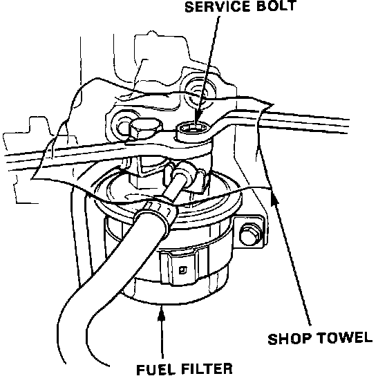
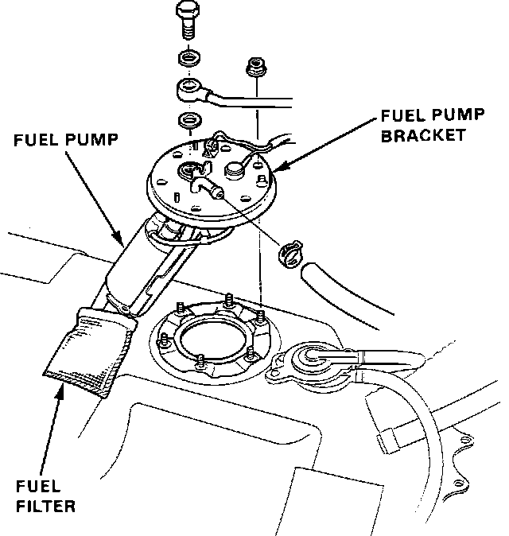

Fuel Pump: Service and Repair
WARNING: Do not smoke while working on the fuel system. Keep open flame away from your work area. Make sure the engine is OFF before relieving the fuel pressure.1. Place a shop towel under the fuel filter.
2. Relieve the fuel pressure.
a. Disconnect the negative battery cable.
b. Remove the fuel tank filler cap.
c. Use a box end wrench on the 6mm service bolt at the top of the fuel filter, while holding the special banjo bolt with another wrench.
Fuel Filter Typical:

d. Place a rag or shop towel over the 6mm service bolt and SLOWLY loosen the 6mm service bolt one complete turn.
3. Remove fuel tank refer to, "COMPONENT REPLACEMENT AND REPAIR PROCEDURES".
4. Remove hoses to Fuel Pump.
Fuel Pump Replacement:

5. Remove Fuel Pump mounting nuts.
6. Install new Fuel Pump and torque mounting nuts to:
6 Nm (4 ft lb)
7. Reinstall the Fuel Pump hoses.
8. Reinstall fuel tank refer to, "COMPONENT REPLACEMENT AND REPAIR PROCEDURES".
9. START engine check for any leaks.